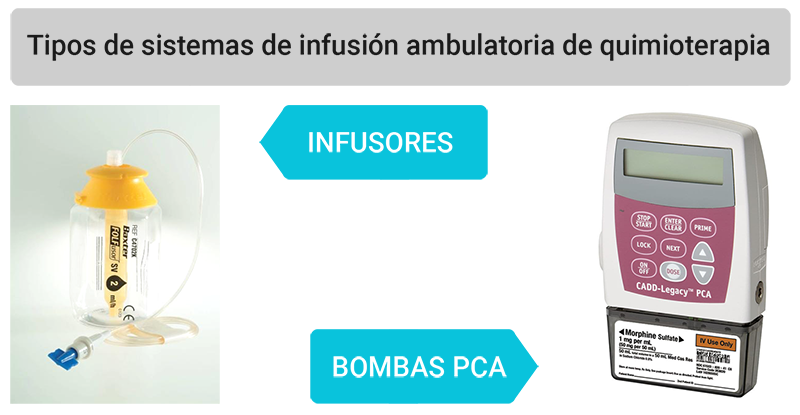

ICO 24h
MÓDULO 2 : Hospital de Día Oncológico
2.4 Bombas de infusión de quimioterapia ambulatoria
Algunos pacientes completan el tratamiento en domicilio mediante la infusión continua de quimioterapia endovenosa a través de una bomba.
En nuestro entorno, los sistemas más utilizados son los infusores y las bombas de PCA.
A continuación, detallamos las principales incidencias que pueden ser motivo de consulta urgente de los pacientes portadores de bombas de infusión a domicilio:
- A Se le ha despinchado la aguja del Port-a-cath. En este caso debemos aconsejarle al paciente que pinze la tubuladura, introduzca todo en una bolsa de plástico cerrada, y acuda al ICO.
- B El balón del infusor no se ha desinflado. En este caso debemos aconsejarle revisar que la alargadera no esté acodada ni con el clamp puesto. Si no se detecta ninguna anomalia, acudir al ICO.
- C El tratamiento está fuera del globo. En este caso debemos aconsejarle cerrar la línea con el clamp, mantener el dispositivo en posición vertical. Poner el dispositivo dentro de una bolsa de plástico para evitar que la solución se salga. Acudir al ICO.
- D La bomba pita:
- Pilas agotadas realizar el cambio de pilas, apretar el botón de parada sin soltarlo hasta que se vean tres rayas, cambiar las pilas, apretar de nuevo el botón de parada/inicio hasta que se vean tres rayas.
- Oclusión Revisar la tubuladura, que no esté ni doblada ni pinzada con un clamp.
- Finalización de la infusión Parar la bomba apretando el botón de PARADA/INICIO hasta que se vean tres rayas y acudir al ICO para retirar la infusión en el horario establecido. Puede esperar hasta 24 horas una vez finalizada la infusión para acudir al ICO.